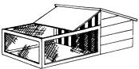

Coop and wire run suitable for hatching and brooding of ducklings with a hen. The bars keep hen confined, but let ducklings get sunlight and fresh air safe from dogs, cats, rats, etc. Top lifts up to allow cleaning, feeding, watering.